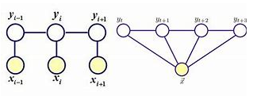

返回首页 2021-01-04
CRF是概率图模型中一个非常经典的概率无向图模型，常用在命名实体识别等序列标注任务上。
给定给一个序列$x$，计算标签序列$y$的概率$P(y|x)$.
概率无向图模型又称为马尔可夫随机场，它要求$P(Y)$必须满足成对、局部、全局马尔可夫性，然后根据Hammersley-Clifford定理，概率无向图模型的联合概率分布$P(Y)$可以分解成规范化的最大团的势函数乘积（这个定理暂时不深究）。
条件随机场在此基础上加了一个随机变量X进来，于是$P(Y)$变成$P(Y_v|X, Y_w, w {=}\mathllap{/\,} v) = P(Y_v|X, Y_v, w \sim v)$，其中$\sim$表示相邻。此时，Y仍旧满足马尔可夫随机场。
线性链条件随机场在此基础上，要求Y具有链式结构，但是对X没有要求，可用下图来表示：

这里的定义是：
$$ P(Y_i|X, Y_1, ..., Y_{i-1}, Y_{i+1}, ..., Y_n) = P(Y_i|X, Y_{i-1}, Y_{i+1}) $$
以上两张图都是线性链条件随机场，线性链条件随机场的最大团就是相邻两个结点的集合。而通过对这两张图进行内部比较，可以发现左边的图更为特殊，因为X和Y具有相同的结构。现实中，比如对于NER问题，对一个文本序列进行序列标注，都一般假设X和Y具有相同结构，满足左边的那张图。
于是我们就可以定义CRF中的状态转移特征函数$t_k(y_{i-1}, y_i, x, i)$和状态特征函数$s_l(y_i, x, i)$，它们分别描述了状态转移概率和发射概率。
特征函数的取值只有0或者1，比如一个具体的特征函数：
$$ t1(y_{i-1}=1, y_i=2, x, i) = 1, \quad i=2, 3 $$
这个特征函数其实是可以拆开的，虽然只阐述了在2和3这两个位置上取值为1的条件，但是可以默认其余位置上都为0。
但是光有特征函数是不够的，每个特征函数还都对应一个权重。于是，整个参数化的线性链条件随机场就可以表示为：
$$ P(y|x) = \frac{1}{Z(x)}exp(\sum_{i,k}\lambda_k t_k(y_{i-1}, y_i, x, i) + \sum_{i, l}\mu_l s_l(y_i, x, i)) $$
Z(x)是归一化因子，它作用在全局上，实现全局归一化，这恰恰就是CRF相比于MEMM的改进之处。
这里有一个细节值得注意：$i$和$k/l$分别是位置编号和特征函数编号，它们是分开的！换句话说，每个位置上都存在多种特征函数，而一个特征函数又是作用在整个序列y上的。
基于此，对CRF进行简化表示：
$$ P(y|x) = \frac{1}{Z(x)}exp(\sum_{k=1}^K w_kf_k(y, x)) $$
其中
$$ f_k(y, x) = \sum_{i=1}^n f_k(y_{i-1}, y_i, x, i) $$
是两种特征函数的统一形式。
可以看到，$f_k(y, x)$是单个特征函数在整个序列上的取值，$P(y|x)$是所有特征函数与权重的加权和。
这里的特征函数有K个，是两种特征函数的数量和，位置则是从1到n。
接下来，尝试将其转化成向量形式：
$$ P_w(y|x) = \frac{exp(w \cdot F(y, x))}{Z_w(x)} $$
其中
$$ w = (w_1, w_2, ..., w_K)^T $$ $$ F(y, x) = (f_1(y, x), f_2(y, x), ..., f_K(y, x))^T $$
这里的$\cdot$表示内积。
简化到这一步还没完，我们还可以将其继续简化到矩阵表示形式。
假设标签的数量为m，定义一个$m$阶矩阵随机变量：
$$ M_i(x) = [M_i(y_{i-1}, y_i, x)] $$
$M_i(x)$对应在位置$i$处的矩阵，矩阵元素为$M_i(y_{i-1}, y_i, x)$，可展开如下：
$$ M_i(x) = [M_i(y_{i-1}, y_i, x)] = \begin{bmatrix} M_i(y_{i-1}=c_1, y_i=c_1|x) & M_i(y_{i-1}=c_1, y_i=c_2|x) & \cdots & M_i(y_{i-1}=c_1, y_i=c_m|x)\\ M_i(y_{i-1}=c_2, y_i=c_1|x) & M_i(y_{i-1}=c_2, y_i=c_2|x) & \cdots & M_i(y_{i-1}=c_2, y_i=c_m|x)\\ \vdots & \vdots & \ddots & \vdots\\ M_i(y_{i-1}=c_m, y_i=c_1|x) & M_i(y_{i-1}=c_m, y_i=c_2|x) & \cdots & M_i(y_{i-1}=c_m, y_i=c_m|x) \end{bmatrix} $$
也就是在位置$i$处定义了一个$m*m$的矩阵。
其中
$$ M_i(y_{i-1}, y_i, x) = exp(W_i(y_{i-1}, y_i|x))\\ W_i(y_{i-1}, y_i|x) = \sum_{k=1}^K w_kf_k(y_{i-1}, y_i, x, i) $$
可以看到$M_i(y_{i-1}, y_i, x)$是一个位置上所有的特征函数的取值的加权和。这里给每个概率加上了一个$exp$，是为了方便计算，加上$exp$之后路径上每个概率连乘，不仅在指数上可以得到累加和，还方便计算softmax概率，后面还会提到。
有了这个$M_i(x)$基本得到了$i$位置上所有可能的状态转移和发射。
那么对于整个序列Y的概率：
$$ P_w(y|x) = \frac{1}{Z_w(x)}\prod_{i=1}^{n+1} M_i(y_{i-1}, y_i|x) $$
假设标签序列$y = \{y_1, y_2, ..., y_n\}$，那么整个序列的概率的分子就是：
$$ exp(W_1(y_{0}, y_1|x)) \cdot exp(W_2(y_{1}, y_2|x)) \cdots exp(W_n(y_{n}, y_{n+1}|x)) $$
把$W_i(y_{i-1}, y_i|x)$简记为$a(i)$，得到：
$$ exp(a(1)+a(2)+...+a(n+1)) $$
因为序列是以start开始以stop结束的，所以完整的序列是$\{start, y_1, ..., y_n, stop\}$，所以$W_i(y_{i-1}, y_i|x)$从$1$开始，直到$n+1$
把整个路径概率和记为$l_1$，就是
$$ exp(l_1) $$
分子已经是exp的形式了，那么接下来就只需要计算分母这个归一化因子了。
所有可能路径的概率和，那总共就有$n^m$种了，n是序列长度，m表示每个位置上的取值种数
$$ exp(l_1) + exp(l_2) + \cdots + exp(l_{n^m}) $$
二者相除，自然就可以得到路径$l_1$全局归一化的概率了：
$$ \frac{exp(l_1)}{\sum_{i=1}^{n^m}exp(l_i)} $$
所以回头看看，$M_i(y_{i-1}, y_i, x)$带有一个$exp$就能自圆其说了。
到这里，基本上，整个CRF的参数就能确定了，特征函数以及他们的权重用$n+1$个$m*m$的矩阵表示了出来。
深度学习模型中的CRF层没有显式地去定义特征函数，容易让初学者疑惑，其实参数转移矩阵就暗含了每个位置上的特征函数，这就像电影《超体》的女主一样，它虽然看不见摸不着，但是它却无处不在。
所以，整个CRF就学习$(n+1)*m*m$的参数就好了，最后计算的时候做一个全局归一化，就能得到任意一个路径的概率。
最后来总结下CRF模型的表示形式：
$$ P_w(y|x) = \frac{1}{Z_w(x)}\prod_{i=1}^{n+1} M_i(y_{i-1}, y_i|x) $$
其中
$$ M_i(y_{i-1}, y_i|x) = exp(\sum_{k=1}^K w_kf_k(y_{i-1}, y_i|x)) $$
$Z_w(x)$是以start为起点，以stop为终点通过状态的所有路径的非规范化概率$\prod_{i=1}^{n+1} M_i(y_{i-1}, y_i|x)$之和。